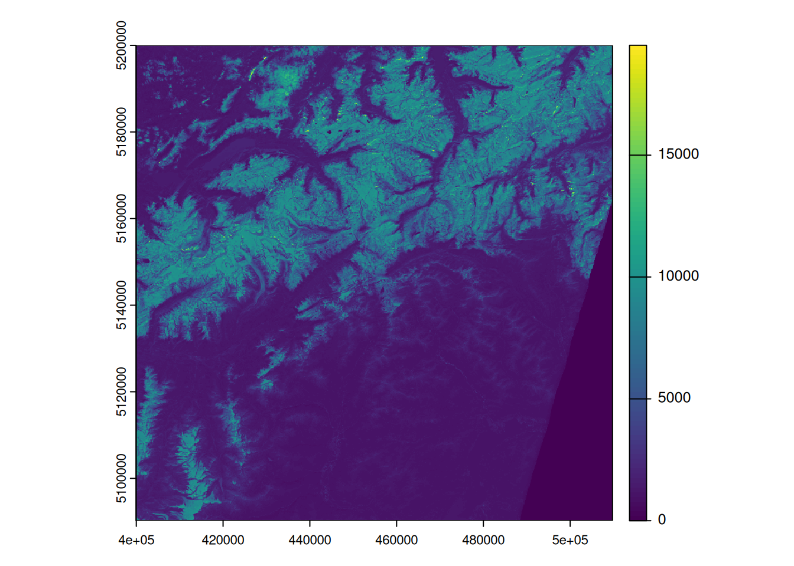
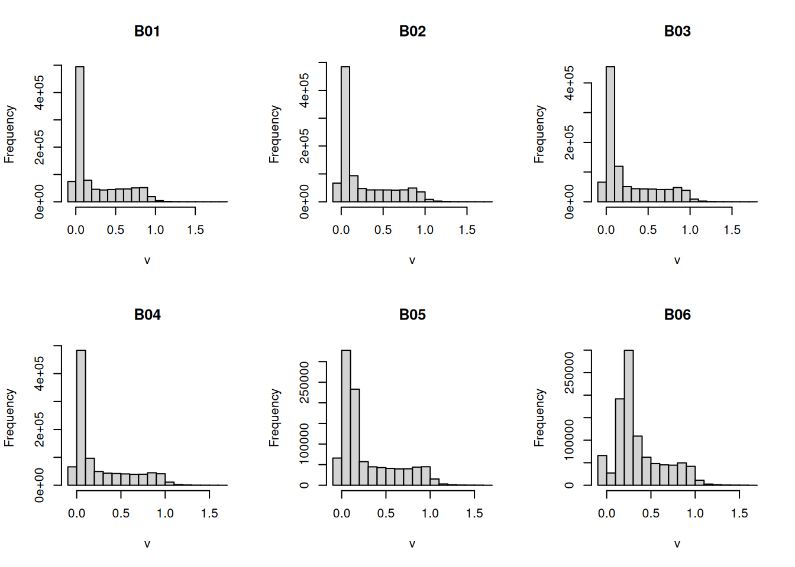
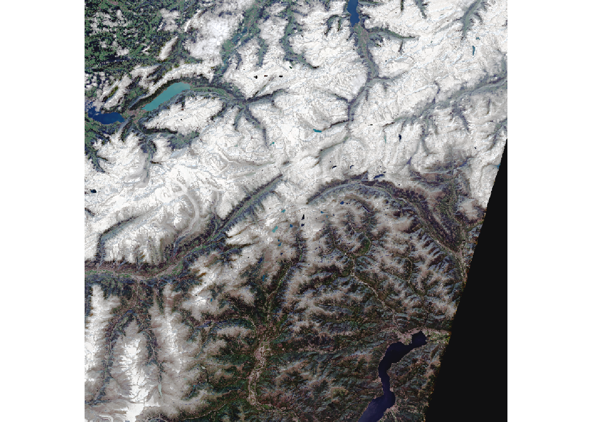
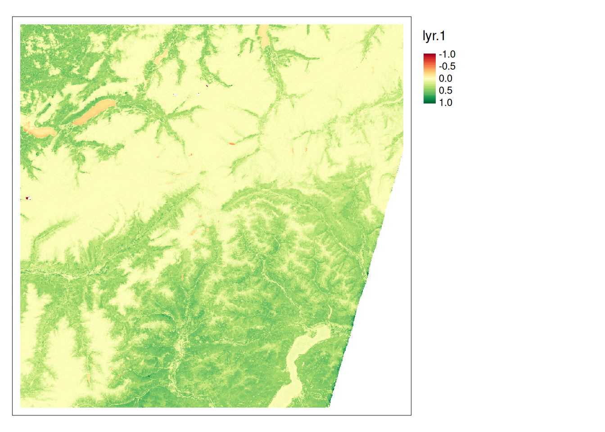

levelName
1 data-large
2 °--S2B_MSIL2A_20240915T102559_N0511_R108_T32TMS_20240915T131207.SAFE
3 ¦--DATASTRIP
4 ¦ °--DS_2BPS_20240915T131207_S20240915T102803
5 ¦ ¦--MTD_DS.xml
6 ¦ °--QI_DATA
7 ¦ ¦--FORMAT_CORRECTNESS.xml
8 ¦ ¦--GENERAL_QUALITY.xml
9 ¦ ¦--GEOMETRIC_QUALITY.xml
10 ¦ ¦--RADIOMETRIC_QUALITY.xml
11 ¦ °--SENSOR_QUALITY.xml
12 ¦--GRANULE
13 ¦ °--L2A_T32TMS_A039316_20240915T102803
14 ¦ ¦--AUX_DATA
15 ¦ ¦ ¦--AUX_CAMSFO
16 ¦ ¦ °--AUX_ECMWFT
17 ¦ ¦--IMG_DATA
18 ¦ ¦ ¦--R10m
19 ¦ ¦ ¦ ¦--T32TMS_20240915T102559_AOT_10m.jp2
20 ¦ ¦ ¦ ¦--T32TMS_20240915T102559_B02_10m.jp2
21 ¦ ¦ ¦ °--... (etc)
22 ¦ ¦ ¦--R20m
23 ¦ ¦ ¦ ¦--T32TMS_20240915T102559_AOT_20m.jp2
24 ¦ ¦ ¦ ¦--T32TMS_20240915T102559_B01_20m.jp2
25 ¦ ¦ ¦ °--... (etc)
26 ¦ ¦ °--R60m
27 ¦ ¦ ¦--T32TMS_20240915T102559_AOT_60m.jp2
28 ¦ ¦ ¦--T32TMS_20240915T102559_B01_60m.jp2
29 ¦ ¦ °--... (etc)
30 ¦ ¦--MTD_TL.xml
31 ¦ °--QI_DATA
32 ¦ ¦--FORMAT_CORRECTNESS.xml
33 ¦ ¦--GENERAL_QUALITY.xml
34 ¦ ¦--GEOMETRIC_QUALITY.xml
35 ¦ ¦--L2A_QUALITY.xml
36 ¦ ¦--MSK_CLASSI_B00.jp2
37 ¦ ¦--MSK_CLDPRB_20m.jp2
38 ¦ ¦--MSK_CLDPRB_60m.jp2
39 ¦ ¦--MSK_DETFOO_B01.jp2
40 ¦ ¦--MSK_DETFOO_B02.jp2
41 ¦ ¦--... (etc)
42 ¦ ¦--MSK_QUALIT_B01.jp2
43 ¦ ¦--MSK_QUALIT_B02.jp2
44 ¦ ¦--MSK_SNWPRB_20m.jp2
45 ¦ ¦--MSK_SNWPRB_60m.jp2
46 ¦ ¦--SENSOR_QUALITY.xml
47 ¦ °--T32TMS_20240915T102559_PVI.jp2
48 ¦--HTML
49 ¦ ¦--banner_1.png
50 ¦ ¦--banner_2.png
51 ¦ ¦--banner_3.png
52 ¦ ¦--star_bg.jpg
53 ¦ ¦--UserProduct_index.html
54 ¦ °--UserProduct_index.xsl
55 ¦--INSPIRE.xml
56 ¦--manifest.safe
57 ¦--MTD_MSIL2A.xml
58 ¦--rep_info
59 ¦ ¦--S2_PDI_Level-2A_Datastrip_Metadata.xsd
60 ¦ ¦--S2_PDI_Level-2A_Tile_Metadata.xsd
61 ¦ °--S2_User_Product_Level-2A_Metadata.xsd
62 °--S2B_MSIL2A_20240915T102559_N0511_R108_T32TMS_20240915T131207-ql.jpgShowcase: Importing Sentinel data
Download data
To download Sentinel data:
- Go to the Copernicus Browser website
- Login using your credentials
- Go to your area of interest
- Click on the “Search” Tab in the left panel
- In Data Source, select Sentinel 2 → L2A
- Choose your desired time frame
- Click on the “Search” button
- From the search results, download one or two scenes
Copernicus SAFE Format I
- Sentinel 2 data is provided in SAFE format. This is a zipped file that contains the data in separate JP2 files
- The Sentinel-SAFE format wraps a folder containing image data in a binary data format and product metadata in XML.
- This includes:
- A ‘manifest.safe’ file which holds the general product information in XML.
- Subfolders for measurement datasets containing image data in various binary formats.
- A preview folder containing ‘quicklooks’ in PNG format, Google Earth overlays in KML format and HTML preview files.
- An annotation folder containing the product metadata in XML as well as calibration data.
- A support folder containing the XML schemes describing the product XML.
Copernicus SAFE Format II
The SAFE folder above includes the following content:
The data we are interested in is in the IMG_DATA folder. This folder contains the data in three different resolutions, where each band is a separate file jp2 File.
library(terra)
library(dplyr)
s2_files <- list.files("data-large/S2B_MSIL2A_20240915T102559_N0511_R108_T32TMS_20240915T131207.SAFE/GRANULE/L2A_T32TMS_A039316_20240915T102803/IMG_DATA/R60m/", "\\.jp2$", full.names = TRUE)- We can import all
jp2files into arastobject in a singerast()command. - Before we do this, let’s filter the data for the bands we are interested in (
B01…B12) - To add reasonable
namesto the SpatRaster object, we can usestr_split_fixedto extract the relevant information from the file names.
library(stringr)
# selecting only the bands we are interested in:
s2_files <- s2_files[str_detect(s2_files, "B\\d{2}")]
s2 <- rast(s2_files)
# Extracting the band names from the file names and adding these
names(s2) <- str_split_fixed(names(s2), "_",4)[,3]
names(s2) [1] "B01" "B02" "B03" "B04" "B05" "B06" "B07" "B09" "B11" "B12"- Test if the data is loaded correctly:
plot(s2[[1]])
- Note how the values range from 0 to > 15000. It seems that the values are not scaled yet (see Data Types, scale and offset)
- If
scaleandoffsetvalues were set usingGDALflags,terrawould automatically apply these values - However, it seems that we have to apply these values manually: this website, writes the following:
The transformation of reflectances in 16 bit integers is performed according to the following equation: \[\text{L1C\_DN} = \rho \times \text{QUANTIFICATION\_VALUE} - \text{RADIO\_ADD\_OFFSET}\] The L1C product’s metadata includes the values for the QUANTIFICATION_VALUE and RADIO_ADD_OFFSET.
- This information is stored in the file
MTD_MSIL2A.xml: - This file contains information about the bands, the scale factor, and the offset values.
- If we search for
QUANTIFICATION_VALUE, we find the following information:
<QUANTIFICATION_VALUES_LIST>
<BOA_QUANTIFICATION_VALUE unit="none">10000</BOA_QUANTIFICATION_VALUE>
<AOT_QUANTIFICATION_VALUE unit="none">1000.0</AOT_QUANTIFICATION_VALUE>
<WVP_QUANTIFICATION_VALUE unit="cm">1000.0</WVP_QUANTIFICATION_VALUE>
</QUANTIFICATION_VALUES_LIST>- If we search for
ADD_OFFSET, we find the following information:
<BOA_ADD_OFFSET_VALUES_LIST>
<BOA_ADD_OFFSET band_id="0">-1000</BOA_ADD_OFFSET>
<BOA_ADD_OFFSET band_id="1">-1000</BOA_ADD_OFFSET>
<BOA_ADD_OFFSET band_id="2">-1000</BOA_ADD_OFFSET>
<BOA_ADD_OFFSET band_id="3">-1000</BOA_ADD_OFFSET>
<BOA_ADD_OFFSET band_id="4">-1000</BOA_ADD_OFFSET>
<BOA_ADD_OFFSET band_id="5">-1000</BOA_ADD_OFFSET>
<BOA_ADD_OFFSET band_id="6">-1000</BOA_ADD_OFFSET>
<BOA_ADD_OFFSET band_id="7">-1000</BOA_ADD_OFFSET>
<BOA_ADD_OFFSET band_id="8">-1000</BOA_ADD_OFFSET>
<BOA_ADD_OFFSET band_id="9">-1000</BOA_ADD_OFFSET>
<BOA_ADD_OFFSET band_id="10">-1000</BOA_ADD_OFFSET>
<BOA_ADD_OFFSET band_id="11">-1000</BOA_ADD_OFFSET>
<BOA_ADD_OFFSET band_id="12">-1000</BOA_ADD_OFFSET>
</BOA_ADD_OFFSET_VALUES_LIST>- We can now use the
scale(10’000) andoffset(-1’000) values to convert the data to reflectance values. - We can then use
histto get a histogram of the values in each band - Note that most bands have values > 1.
- We have to decide how to handle these values
- One option is to simply clip the values to the desired range
s2b <- (s2 - 1000)/10000
hist(s2b)
# function to clip values to the desired range
force_minmax <- \(x, min = 0, max = 1){
x[x<min] <- min
x[x>max] <- max
x
}To apply this function to all bands, we can use the app function.
s2c <- app(s2b, force_minmax)
# If we now check the min/max values, we see that all values are between 0 and 1
minmax(s2c) B01 B02 B03 B04 B05 B06 B07 B09 B11 B12
min 0 0 0 0 0 0 0 0 0 0
max 1 1 1 1 1 1 1 1 1 1To test if we processed the data correctly, let’s create a True Color image using the bands B04, B03, and B02.
plotRGB(s2c,r = 4, g = 3, b = 2, stretch = "histogram", smooth = FALSE)
# To export the R,G,B bands to a True Color Geotiff:
writeRaster(s2c[[c(4,3,2)]], "data-out/sentinel-rgb.tif", overwrite = TRUE)To calculate NDVI, we can create our custom function and apply it to the s2c object using app:
ndvi <- \(x){(x[5]-x[4])/(x[5]+x[4])}
s2_ndvi <- app(s2c, ndvi)
library(tmap)
tm_shape(s2_ndvi) +
tm_raster(style = "cont",midpoint = 0) +
tm_layout(legend.outside = TRUE)